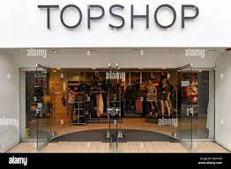
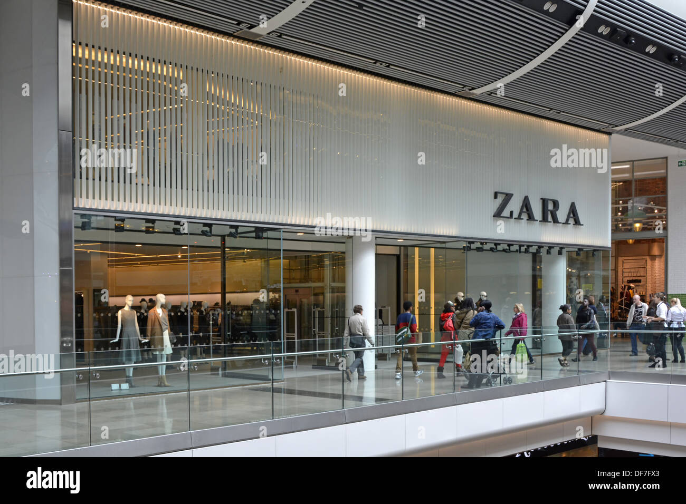

LEMOR
Step into Lemor, where style meets sophistication. At Lemor, we offer a curated collection of trendy and timeless fashion pieces that elevate your wardrobe. From chic dresses to elegant accessories, our store is a haven for fashion enthusiasts. Whether you're dressing for a special occasion or updating your everyday look, Lemor has something for everyone.
Exclusive Opening Offer:
Visit us today and enjoy a 20% discount on your first purchase! Don’t miss out on our new summer collection – perfect for making a statement.
Find Us in the Mall:
Enter the mall through the main entrance. Walk straight ahead and take the first escalator to the first floor. As you reach the first floor, turn right. Continue walking past the food court and you’ll find Lemor on your left, right next to the large fountain and across from the bookstore.
Come and experience fashion at its finest at Lemor. We can't wait to see you!.

LOU AND GREY
Welcome to Lou AND Grey: Effortless Style for Every Day. Discover Lou & Grey, where comfort meets chic. Our collection features a range of cozy, stylish apparel designed for the modern woman. From soft knits to relaxed fits, each piece is crafted with care to bring you unparalleled comfort without compromising on style. Whether you're lounging at home or stepping out for a casual day, Lou & Grey has your perfect outfit.
Exclusive Opening Offer:
Join us for our grand opening and enjoy a 25% discount on all new arrivals! Explore our latest collection and find your new wardrobe staples.
Find Us in the Mall:
Enter the mall through the main entrance. Head straight to the central atrium and take the glass elevator to the second floor. Once you step out of the elevator, turn left. Walk past the home decor stores, and you’ll see Lou AND Grey on your right, directly opposite the children’s play area.
Come visit Lou AND Grey and redefine your casual wardrobe. We can't wait to see you!
NOORDSTRAM
Welcome to Noordstram: Your Destination for Premium Fashion Experience luxury and elegance at Noordstram, where we offer a curated selection of high-end fashion pieces for men and women. From designer clothing to exquisite accessories, our store is the epitome of style and sophistication. Whether you're dressing for a gala or upgrading your everyday wardrobe, Noordstram has the perfect ensemble for every occasion.
Exclusive Opening Offer:
Celebrate our grand opening with a 30% discount on your first purchase! Discover the latest collections from top designers and elevate your style.
Find Us in the Mall:
Enter the mall through the main entrance. Take the central escalator to the third floor. As you reach the third floor, turn left. Walk straight ahead, passing the luxury watch boutiques, and you’ll find Noordstram on your left, next to the high-end cosmetics store.
Visit Noordstram and immerse yourself in the world of premium fashion. We look forward to welcoming you!
TOPSHOP
Discover Topshop: Fashion Forward and Trendsetting Step into Topshop, where the latest trends and timeless styles come together. Our collection features everything from chic apparel to must-have accessories, designed for the fashion-savvy individual. Whether you're looking for a statement piece or everyday essentials, Topshop has you covered. Embrace your unique style and stand out from the crowd with our versatile and fashionable selections.
Exclusive Opening Offer:
Join us for our grand opening and enjoy a 20% discount on all items! Explore our new collection and refresh your wardrobe with the hottest trends.
Find Us in the Mall:
Enter the mall through the main entrance. Walk straight down the central hallway and take the first escalator on your right to the first floor. At the top of the escalator, turn left. Continue walking past the shoe stores, and you’ll see Topshop on your right, across from the trendy café.
Come visit Topshop and elevate your fashion game. We can't wait to see you!
ZARA
Welcome to Zara: Where Style Meets Elegance Discover Zara, your go-to destination for cutting-edge fashion and timeless elegance. Our diverse collection offers something for everyone, from sophisticated workwear to chic casual outfits and stunning evening wear. Stay ahead of the fashion curve with Zara's latest arrivals and effortlessly stylish pieces.
Exclusive Opening Offer:
Celebrate our grand opening with a 25% discount on all new arrivals! Refresh your wardrobe with Zara's latest collections and embrace your personal style.
Find Us in the Mall:
Enter the mall through the main entrance. Walk straight ahead, passing the central atrium. Continue down the main corridor, and you’ll find Zara on your left, right next to the large water fountain and across from the gourmet food court.
Visit Zara and experience fashion like never before. We look forward to welcoming you!